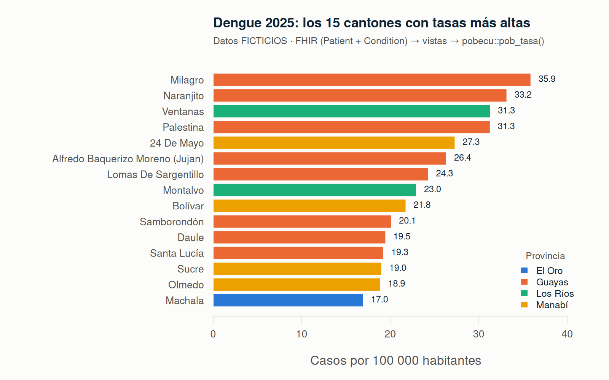
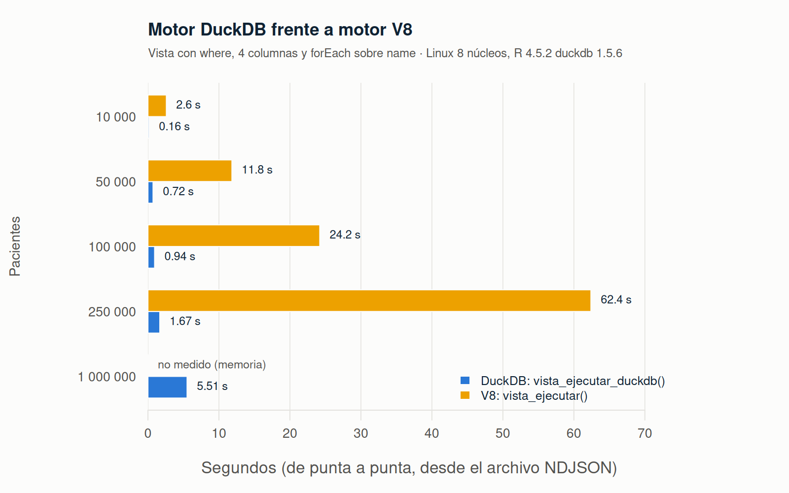

From FHIR resources to reproducible tables in R, and from SQL to FHIR through explicit mappings.
Español · English


About the language. This is a translation of the Spanish README. The package is aimed at users in Ecuador and Latin America: function names, arguments, messages, the reference documentation and the vignettes are in Spanish. See the glossary below.
fhirviews queries HL7 FHIR R4 servers and turns their resources into data.frames using SQL on FHIR and FHIRPath. Define a view once, save it as a ViewDefinition and reuse it on local files, server responses or population-level exports.
It also builds Patient, Observation, Encounter, Condition and Immunization from a data.frame or a SQL query through DBI, with explicit column, constant and reference mappings. JSON and NDJSON output preserve decimal scale.
It is designed for clinical analysis, research, epidemiological surveillance and teaching in R. It includes SMART on FHIR authentication, views for public health and block-wise NDJSON processing, without installing Java or Spark.
The technical pipeline combines an HTTP client based on httr2, a FHIRPath evaluator using fhirpath.js in V8, and an optional SQL translator for DuckDB. The extraction definition is independent of the source: the same ViewDefinition can be applied to resources fetched over REST or to local files. Compatibility of the SQL engine is tested separately.
Documentation · Reference · What’s new in 0.5.0 · Report a problem
flowchart TB
accTitle: fhirviews workflows with FHIR R4
accDescr: A view projects FHIR resources into tables. A separate explicit mapping builds R4 resources from rows, preserves decimal scale and supports server profile validation.
subgraph READ["FHIR → tables"]
direction LR
FHIR["FHIR R4<br/>server or files"] --> VIEW["ViewDefinition<br/>FHIRPath"]
VIEW --> TABLE["Tables<br/>R and SQL"]
end
subgraph BUILD["Tables → FHIR R4"]
direction LR
ROWS["Rows<br/>R or DBI SQL"] --> MAP["Explicit<br/>mapping"]
MAP --> R4["Resources<br/>FHIR R4"]
R4 --> OUT["JSON / NDJSON"]
R4 --> PROFILE["Server profile<br/>validation"]
endReading uses V8 or the experimental DuckDB translator. Construction supports Patient, Observation, Encounter, Condition and Immunization, preserving the decimal scale available at the source. To construct resources from a projected table, prepare the rows and choose a mapping, with explicit decisions about omitted or aggregated columns.
Status and versions
| Version or component | Status and use |
|---|---|
Current development: 0.5.0.9001 |
GitHub source. SQL → FHIR for five R4 resources, eight catalogue views and the new allergy view. No version DOI assigned yet. |
Archived 0.5.0.9000 |
Earlier source preserved in Zenodo. Its DOI identifies that specific archive. |
0.5.0 |
GitHub release, submitted to CRAN on 7 November 2026. Does not include SQL → FHIR. Consult the official CRAN catalogue for publication. |
| Rust | Tested laboratory, separate from the installed package. Results and limits. |
| Federation and R4/R6 | Planned work, currently unavailable. Remaining work and priorities. |
The priority is to close R4 with the installed candidate and an external pilot. The reader and views can handle other R4 resources; construction from SQL remains limited to Patient, Observation, Encounter, Condition and Immunization. GitHub or Zenodo publication is independent of CRAN acceptance.
Contents
- Get started: What you can do · Installation · Quick start · Function-name glossary.
- Extract and query: FHIR servers · Authentication and Bulk Data · Files in blocks · DuckDB.
- Construct resources: SQL → FHIR · Mapping rules · Supported resources.
- Understand views: Architecture · Semantics · Choose the engine · Catalogue and terminology.
- Check results: Validation and privacy · Conformance and tests · Performance and Rust · Limitations.
- Follow development: R4 closure · Remaining work · Pilot · Guides.
- Authorship and collaboration: Cite the package · Contribute · License.
Glossary of function names
| Spanish | English | Examples |
|---|---|---|
vista |
view (ViewDefinition) |
vista_crear() create, vista_ejecutar() run, vista_leer() read, vista_validar() validate |
lotes |
blocks / batches |
vista_ejecutar_lotes() run a view block by block |
catalogo, plantilla
|
catalogue, template |
vista_catalogo(), vista_plantilla()
|
conformidad |
conformance |
vista_conformidad() runs the official test suite |
conectar, buscar, leer
|
connect, search, read |
fhir_conectar(), fhir_buscar(), fhir_leer()
|
crear, actualizar, borrar
|
create, update, delete |
fhir_crear(), fhir_actualizar(), fhir_borrar()
|
exportar, estado
|
export, status |
fhir_exportar(), fhir_exportar_estado()
|
autenticacion |
authentication |
fhir_auth_backend(), fhir_auth_cliente(), fhir_auth_interactiva()
|
expandir, validar_codigo
|
expand, validate code |
tx_expandir(), tx_validar_codigo()
|
recursos, tabla
|
resources, table |
fhir_recursos(), fhir_tabla()
|
mapa, desde_sql, desde_tabla, escribir
|
mapping, from SQL, from table, write |
fhir_mapa(), fhir_desde_sql(), fhir_desde_tabla(), fhir_escribir()
|
procesar, bloque, tamano_lote
|
process, block, block size | arguments of vista_ejecutar_lotes()
|
diferido, estricto
|
lazy, strict | arguments of vista_ejecutar_duckdb() and vista_ejecutar_lotes()
|
What you can do
| Need | Tools |
|---|---|
| Turn JSON, Bundles or R resources into tables |
vista_crear(), vista_ejecutar()
|
| Query FHIR with automatic paging |
fhir_conectar(), fhir_buscar(), fhir_leer()
|
| Access protected servers |
fhir_auth_cliente(), fhir_auth_backend(), fhir_auth_interactiva()
|
| Download a population with Bulk Data |
fhir_exportar(), fhir_exportar_estado()
|
| Read NDJSON and gzip without holding the whole output in memory | vista_ejecutar_lotes() |
| Run a SQL-translatable view on NDJSON or Parquet |
vista_ejecutar_duckdb() — experimental |
| Query several tables with SQL |
vista_duckdb() — views evaluated with V8 and stored in one transaction |
| Build Patient, Observation, Encounter, Condition and Immunization from SQL queries or tables |
fhir_mapa(), fhir_desde_tabla(), fhir_desde_sql()
|
| Save resources preserving original JSON decimals |
fhir_escribir() — JSON or NDJSON |
| Start from public health views |
vista_catalogo(), vista_plantilla()
|
| Define cohorts with the codes of a ValueSet |
tx_expandir(), vista_con_valueset()
|
| Write and validate resources on the server |
fhir_crear(), fhir_actualizar(), fhir_borrar(), fhir_validar()
|
A ViewDefinition describes the columns, filters and collections to extract, using FHIRPath expressions. Keeping that definition next to the analysis makes the transformation decisions explicit and easier to review.
Installation
The client and the V8 engine require R ≥ 4.1.0. The repository is public and you can install from GitHub. If the maintainer gave you a .tar.gz file for the pilot, follow the local installation instructions.
Install from GitHub:
install.packages("pak") # once
pak::pak("f-slg/fhirviews")The main branch keeps receiving changes. To reproduce an analysis, install a specific commit and keep sessionInfo() together with the view and the data:
pak::pak("f-slg/fhirviews@<commit-SHA>")FHIRPath is evaluated with fhirpath.js, bundled with the package, through V8. On systems with binaries available, installing V8 needs no extra steps. If you build from source, see its installation instructions.
Install the optional dependencies that your workflow needs:
| Feature | Additional packages |
|---|---|
| DuckDB tables and SQL engine |
DBI, duckdb ≥ 1.3.0; the current DuckDB version requires R ≥ 4.2 |
| Lazy queries on DuckDB | The above, plus dplyr and dbplyr
|
| SMART Backend Services, with a signed JWT |
jose, openssl
|
| Interactive login, with PKCE | httpuv |
| RStudio addins and Connections pane | rstudioapi |
# Example: enable DuckDB
install.packages(c("DBI", "duckdb"))Quick start: from FHIR to a table
This example uses fictitious data bundled with the package. Once installed, it works offline and needs no optional dependencies.
library(fhirviews)
archivo <- system.file("extdata", "caso_clinico.ndjson", package = "fhirviews")
signos <- vista_crear(
"Observation",
c(fecha = "effective.ofType(dateTime)",
medida = "code.text",
valor = "value.ofType(Quantity).value",
unidad = "value.ofType(Quantity).unit"),
where = "value.ofType(Quantity).exists()"
)
tabla <- vista_ejecutar(archivo, signos)
tabla[, c("id", "medida", "valor", "unidad")]
#> id medida valor unidad
#> 1 obs-temp Temperatura corporal 38.40 °C
#> 2 obs-fr Frecuencia respiratoria 20.00 respiraciones/min
#> 3 obs-fc Frecuencia cardíaca 102.00 latidos/min
#> 4 obs-tumor Tamaño del tumor 3.50 cm
#> 5 obs-bsa Superficie corporal 1.77 m2The view selects Observation, keeps those with a valueQuantity and extracts four columns (date, measure, value and unit). vista_crear() adds the resource key in id. You can also start from a view in the catalogue:
tabla_catalogo <- vista_ejecutar(archivo, vista_plantilla("signos_vitales"))
head(tabla_catalogo)
# Save the definition as JSON to version or share it
json_vista <- vista_json(signos)
writeLines(json_vista, "signos-vitales.json")
vista_reutilizable <- vista_leer("signos-vitales.json")Architecture and processing sequence
Extraction is split into four layers. The client fetches resources; the definition declares the extraction; the engines produce rows; the consumer decides how to store, summarise or query the result. Construction from SQL has its own mapping and checks.
flowchart TB
subgraph EN["1. Input"]
REST["FHIR R4 server"]
FILE["JSON, Bundle, NDJSON or gzip"]
PAR["Parquet"]
end
subgraph AC["2. Access and definition"]
HTTP["httr2: REST, SMART and Bulk Data"]
RES["fhir_recursos(): lists and source JSON"]
VIEW["ViewDefinition: resource, where, select and constant"]
VALID["vista_validar(): structure and expressions"]
end
subgraph EX["3. Execution"]
V8["vista_ejecutar(): fhirpath.js in V8"]
LOT["vista_ejecutar_lotes(): incremental reading and V8"]
SQL["vista_ejecutar_duckdb(): experimental SQL translation"]
end
subgraph OUT["4. Consumption"]
DF["Complete data.frame"]
CB["procesar(tabla, bloque)"]
DB["DuckDB table or lazy query"]
DBI["DBI tables in one transaction"]
end
REST --> HTTP --> RES
FILE --> RES --> V8 --> DF
FILE -->|"NDJSON and gzip only"| LOT --> CB
HTTP -->|"Exported files"| LOT
HTTP -->|"Exported files"| SQL
FILE -->|"NDJSON"| SQL
PAR --> SQL
VIEW --> VALID
VALID --> V8
VALID --> LOT
VALID --> SQL
SQL --> DF
SQL --> DB
V8 -->|"vista_duckdb"| DBITo build a reproducible analysis, follow this sequence:
- Identify the input: server, files and expected FHIR version.
- Define the view: resource, filters, columns, types and list expansion.
- Check a sample: compare the rows with the original JSON using V8.
- Choose the execution: in-memory table, blocks or SQL over files.
- Control persistence: a transaction or a temporary destination, depending on the consumer.
- Reconcile results: included and excluded events, references and aggregates.
- Keep evidence: view JSON, input identity, versions and checks.
Batch evaluation in vista_ejecutar() groups V8 calls for resources that are already loaded. Block-wise reading in vista_ejecutar_lotes() also splits the input file; these are two different levels of processing.
Semantics of a view
A ViewDefinition describes a declarative transformation. It is not a SQL query written by the user: its paths are FHIRPath expressions, and the engine applies them to resources of the type given in resource.
| Element | Responsibility | Effect on rows |
|---|---|---|
resource |
Choose the input FHIR type | Other types are ignored |
where |
Evaluate boolean conditions on the resource | Drops resources that do not match |
column |
Evaluate a path and give it a name and type | Adds columns to the current context |
forEach |
Iterate over a collection | One row per element; none if empty |
forEachOrNull |
Iterate, keeping the context when there are no elements | Keeps one row with missing values |
select |
Compose nested extractions | Parts are combined within the same source |
unionAll |
Concatenate branches with compatible columns | Keeps the rows of every branch, including duplicates |
constant |
Declare parameters used by the expressions | Lets you adjust filters without rewriting paths |
repeat |
Traverse nested structures along the declared paths | Expands descendants to extract rows from recursive structures |
collection: true |
Keep several values in one column | Produces a list column |
flowchart TD
A["Resources of the declared type"] --> B["Evaluate where"]
B --> C["Walk select"]
C --> D["column: evaluate paths"]
C --> E["forEach: expand collection"]
C --> F["unionAll: run branches"]
E --> G["Evaluate columns on the child element"]
D --> H["Combine rows per source resource"]
G --> H
F --> H
H --> I["Apply types and build the data.frame"]A scalar column that returns several values raises an error: declare collection: true to keep them, or use an expression that returns a single value. Two collections expanded in sibling parts can multiply the rows of a resource, so check both cardinality and keys before counting events or joining tables. %rowIndex gives the index of the element within its expansion context; it does not replace the resource key.
Choosing how to process the data
| Situation | Function | Where the result goes |
|---|---|---|
| Resources and table fit in memory | vista_ejecutar() |
A complete data.frame
|
| You want to read NDJSON or gzip in blocks with FHIRPath in V8 | vista_ejecutar_lotes() |
To the procesar(tabla, bloque) function you define |
| You have NDJSON or Parquet and a view supported by the SQL translator | vista_ejecutar_duckdb() |
In R, a DuckDB table or a lazy query |
| You want to query several views evaluated with V8 together | vista_duckdb() |
Tables in a DBI connection |
Block-wise processing limits the input read at each step. Total memory also depends on the rows produced by the view and on what your function keeps. In DuckDB, use tabla or diferido = TRUE to avoid bringing the whole output into R.
Querying a FHIR server
The following example uses a public test server and needs an internet connection:
con <- fhir_conectar("https://hapi.fhir.org/baseR4")
pacientes <- fhir_buscar(
con, "Patient", `_count` = 20, max_paginas = 2, progreso = FALSE
)
vista_pacientes <- vista_crear(
"Patient", c(sexo = "gender", nacimiento = "birthDate")
)
vista_ejecutar(pacientes, vista_pacientes)The search follows the server’s next links. _count requests the page size; max_paginas limits the number of pages downloaded. Availability and results of public servers may vary.
sequenceDiagram
autonumber
participant R as R session
participant C as httr2 client
participant S as FHIR server
R->>C: fhir_buscar(con, type, parameters)
C->>S: GET with search parameters
S-->>C: Bundle with entry, total and next link
loop While there is a next link and max_paginas is not reached
C->>S: GET the next URL
S-->>C: Next Bundle
end
C-->>R: fhir_recursos with resources and source JSON
R->>R: vista_ejecutar(resources, view)
Note over C,S: A repeated next link stops paging with a warningPaging follows the link provided by the server; it does not compute page numbers. The connection’s headers and token are restricted to its FHIR base URL. Bulk Data files have their own origin and authorisation policy.
Use fhir_capacidades(con) to see the resources and operations the server supports, fhir_leer() to read a specific resource and fhir_everything() to request $everything. In RStudio, the Connections pane lets you browse resources, and the addins run FHIR requests or views from the editor.
Authentication and bulk export
For SMART Backend Services, first register the client and its public key with the authorisation server. The private key must be RSA with at least 2048 bits, or EC P-384.
# Replace the URL, the client ID and the key with those of your environment
con <- fhir_conectar(
"https://fhir.hospital.ejemplo/r4",
autenticacion = fhir_auth_backend(
"tablero-vigilancia", "~/.claves/privada.pem",
alcances = "system/*.rs", kid = "clave-2026"
)
)
# Start the job and keep its reference before downloading
exp <- fhir_exportar(
con, "paciente", tipos = c("Patient", "Condition"),
carpeta = "exportacion", esperar = FALSE
)
exp <- fhir_exportar_estado(exp, esperar = TRUE)The client obtains and renews the token. The export honours Retry-After and checks the NDJSON it receives before recording each file as complete: JSON content, resource type and count when the manifest includes it. gzip files are also supported.
If a download is interrupted, run exp <- fhir_exportar_estado(exp, esperar = TRUE) again, keeping the object and the folder. Complete files from the same job are reused if their checksum matches; missing or altered files are downloaded again. Each incomplete file restarts from the beginning. Recovery depends on the server keeping the job and its download URLs.
sequenceDiagram
autonumber
participant R as R session
participant A as Authorisation server
participant F as FHIR server
participant D as Local files
R->>A: Request a token with SMART credentials
A-->>R: access_token and expiry
R->>F: GET Patient/$export with Prefer respond-async
F-->>R: 202 and Content-Location
loop Until finished or max_espera is reached
R->>F: Poll Content-Location
F-->>R: 202 with Retry-After, or 200 with manifest
end
loop For each ready file in the manifest
R->>D: Check job identity and checksum
alt Complete reusable file
D-->>R: Use local file
else Missing or altered file
R->>F: Download output URL as authorised
F-->>R: NDJSON or gzip
R->>R: Validate JSON, type and declared count
R->>D: Publish complete file and checksum record
end
end
Note over R,D: A failed download keeps the previous complete filesThe manifest is the contract for the download, not a guarantee of clinical quality. Content validation and the checksum verify different things: the first checks that the NDJSON is as expected; the second detects changes to the local file between retries. Recovery works on whole files, without resuming partial bytes or guaranteeing that the server’s URLs are still valid.
Client credentials with a secret and interactive login with PKCE are also available. See the authentication and Bulk Data guide (in Spanish).
Processing files in blocks
This complete example walks through the bundled file and prints a summary per block. The processing function can write each table to a database or compute aggregates:
archivo <- system.file("extdata", "caso_clinico.ndjson", package = "fhirviews")
vista <- vista_crear("Observation", c(medida = "code.text"))
totales <- vista_ejecutar_lotes(
archivo, vista,
procesar = function(tabla, bloque) {
cat("Bloque", bloque, ":", nrow(tabla), "filas\n")
},
tamano_lote = 20
)
totalesFor your own export, replace archivo with your NDJSON or .ndjson.gz paths. The return value contains bloques, recursos and filas (blocks, resources and rows); the results of the procesar() function are discarded.
Strict contract before writing
Set estricto = TRUE and declare type in every column. The contract is checked up front and must match across the branches of unionAll:
vista <- vista_leer(list(
resource = "Observation",
where = list(list(path = "value.ofType(Quantity).exists()")),
select = list(list(column = list(
list(name = "id", path = "getResourceKey()", type = "id"),
list(name = "valor", path = "value.ofType(Quantity).value", type = "decimal")
)))
))
vista_ejecutar_lotes(
archivo, vista,
procesar = function(tabla, bloque) {
cat("Bloque validado:", bloque, "Filas:", nrow(tabla), "\n")
},
tamano_lote = 20, estricto = TRUE
)Every value is validated before the block is delivered. Numeric strings are not converted to numbers, nor numbers to strings. Integers must be finite, integral and representable in R; the ranges of positiveInt and unsignedInt are enforced. Non-finite numbers are rejected in the input and in the results before serialisation could turn them into missing values. Decimals must be finite. Missing values become typed NAs, and collection elements are checked too. Text types do not validate the format of dates, URIs or clinical codes here.
An error of class fhirviews_error_lotes reports bloque, fase, indice_archivo, completados and, where relevant, columna, tipo_esperado and motivo (block, phase, file index, completed blocks, column, expected type and reason). The phase distinguishes esquema, lectura, evaluacion and procesar (schema, reading, evaluation and processing). Messages omit the values and the original error from the destination. Block 0 means an incompatible definition detected before reading.
With estricto = FALSE, the usual behaviour applies: types can be inferred per block, and incompatible conversions may produce warnings and keep the values unconverted.
sequenceDiagram
autonumber
participant L as NDJSON reader
participant V as V8 engine
participant T as Strict contract
participant P as procesar
L->>T: Check type and collection before reading
loop For each block of lines
L->>L: Parse resources and check finite numbers
L->>V: Evaluate filters and columns
V->>T: Validate values before converting
alt Compatible block
T-->>V: Columns with declared types
V-->>L: Table and release of nodes
L->>P: Deliver table and block number
P-->>L: Return without error
L->>L: Update completed counters
else Incompatible value or cardinality
T-->>L: Structured error
Note over L,P: The rejected block is not delivered to the consumer
end
endThe error stops the run. Upfront validation protects the delivery of the block; the atomicity of whatever procesar() writes depends on the destination and on the transaction set up by the consumer.
Recovery and partial writes
vista_ejecutar_lotes() stops the load on failure and does not retry writes. The block that fails in procesar() may have been partially written. The completados counters count calls that returned without error; they do not confirm persistence and are not a safe checkpoint for skipping blocks.
The following example uses fictitious data and a temporary DuckDB database. It runs a load inside a transaction, forces a failure after writing, checks the rollback and repeats the full load twice:
# Requires DBI and duckdb; needs no server and no DuckDB JSON extension
source(system.file("examples", "lotes-transaccion.R", package = "fhirviews"))The strategy replaces the whole result within the same transaction, so a retry does not add another copy. It does not deduplicate events already present in the input. To use another database, check its transaction support and limits. For files or destinations without rollback, write to a new temporary folder and publish the set only after validating the full load. Keep the input, its order, the view and the block size; do not resume with a blind append onto partial output.
sequenceDiagram
autonumber
participant R as Load in R
participant B as Database
R->>B: BEGIN and replace the result within the transaction
loop Validated blocks
R->>B: Insert rows
end
alt The whole load succeeds
R->>B: COMMIT
B-->>R: New result persisted
else Reading, evaluation or writing fails
R->>B: ROLLBACK
B-->>R: Previous result kept
R->>R: Fix the cause and repeat the whole load
endWorking with DuckDB
The experimental SQL engine translates a ViewDefinition into a DuckDB query. It is useful when the input is large and the view can be expressed in the FHIRPath subset that the translator supports:
archivo <- system.file("extdata", "caso_clinico.ndjson", package = "fhirviews")
vista <- vista_crear("Patient", c(sexo = "gender"))
pacientes_sql <- vista_ejecutar_duckdb(archivo, vista)
vista_sql(vista) # inspect the generated queryTest the view first with vista_ejecutar() on a representative sample. Expressions that the translator does not support raise an error. For your own NDJSON or Parquet files, use their paths instead of archivo.
The SQL engine needs DuckDB’s json extension and may download it the first time. In offline environments, prepare the extension for the same DuckDB version and check LOAD json before running the process. The standard vignette build avoids that download; its SQL examples are enabled explicitly with FHIRVIEWS_VINETAS_DUCKDB=true.
To store several views evaluated with the V8 engine and query them with SQL, use vista_duckdb(). This function writes the tables in one transaction; it does not use the experimental translator.
Choosing the SQL result
| Option | Execution and result | Typical use |
|---|---|---|
| Default | Runs the SQL and collects the result into a data.frame
|
Final tables that fit in R |
tabla = "name" |
Materialises the result in DuckDB and returns the connection | Later queries without moving the whole table |
diferido = TRUE |
Returns a dbplyr query bound to the connection | Filter or aggregate before collect()
|
flowchart TD
A["Validated ViewDefinition"] --> B["FHIRPath to SQL translator"]
B --> C{"Supported expressions?"}
C -->|"No"| X["Error: revise the view or choose V8"]
C -->|"Yes"| D["DuckDB query over NDJSON or Parquet"]
D --> E["data.frame in R"]
D --> F["Table materialised in DuckDB"]
D --> G["dbplyr lazy query"]
G --> H["Filter, group and collect"]tabla and diferido = TRUE are mutually exclusive. There is no automatic fallback to V8 when translation fails. A lazy query may read the files again when it runs, so its inputs must remain available. Close the connections you create when you are done; lazy results depend on their connection staying open.
From SQL to FHIR
fhir_desde_sql() runs a query through an open DBI connection and builds resources according to a fhir_mapa(). fhir_desde_tabla() applies the same mapping to a data.frame. Supports Patient, Observation, Encounter, Condition and Immunization from FHIR R4 4.0.1.
flowchart LR
DB["DBI SQL query / data.frame"] --> M["fhir_mapa: columns, constants and references"]
M --> CHECK["Construct and check R4 structure"]
CHECK --> R["Patient, Observation, Encounter,<br/>Condition and Immunization"]
R --> J["JSON / NDJSON"]
R --> V["ViewDefinition → table"]
R --> C["Profile validation with fhir_validar"]SQL on FHIR defines a tabular projection. Rebuilding resources needs a separate mapping: filters, first(), join(), aggregation or omitted columns may discard information. An arbitrary ViewDefinition cannot be automatically reversed, and reconstruction of the original resource is not guaranteed.
Complete SQL example
This uses an in-memory SQLite database and fictional data. Install DBI and RSQLite if needed. For DuckDB, PostgreSQL or SQL Server, use the corresponding DBI connection and adapt the query syntax. Function and argument names remain in Spanish.
library(fhirviews)
con_db <- DBI::dbConnect(RSQLite::SQLite(), ":memory:")
DBI::dbWriteTable(con_db, "pacientes", data.frame(
paciente_id = c("p1", "p2"), sexo = c("female", "male"),
nacimiento = c("1985-03-12", "2001-11-30"),
apellido = c("Paredes", "Salazar"), nombre = c("Ana", "Jorge")
))
DBI::dbWriteTable(con_db, "resultados", data.frame(
resultado_id = c("o1", "o2"), paciente_id = c("p1", "p2"),
valor = c("98.00", "131.0"), unidad = c("mg/dL", "mg/dL")
))
mapa_pacientes <- fhir_mapa("Patient", c(
id = "paciente_id", gender = "sexo", birthDate = "nacimiento",
"name[0].family" = "apellido", "name[0].given[0]" = "nombre"
))
pacientes <- fhir_desde_sql(con_db,
"SELECT * FROM pacientes ORDER BY paciente_id", mapa_pacientes)
mapa_resultados <- fhir_mapa("Observation", c(
id = "resultado_id", "subject.reference" = "paciente_id",
"valueQuantity.value" = "valor", "valueQuantity.unit" = "unidad"
), constantes = list(
status = "final", "code.text" = "Glucosa"
), referencias = c("subject.reference" = "Patient"))
observaciones <- fhir_desde_sql(con_db,
"SELECT * FROM resultados ORDER BY resultado_id", mapa_resultados)
observaciones[[1]]$subject$reference # "Patient/p1"
vista_fhirpath(observaciones, "value.ofType(Quantity).value") # 98, 131
salida <- tempfile(fileext = ".ndjson")
fhir_escribir(c(pacientes, observaciones), salida)
fhir_escribir(observaciones, tempfile(fileext = ".json"), formato = "json")
# Extract fields from the generated resources again
vista <- vista_crear("Observation", c(
paciente = "subject.getReferenceKey(Patient)",
valor = "value.ofType(Quantity).value"
))
vista_ejecutar(salida, vista)
# id paciente valor
# 1 o1 p1 98
# 2 o2 p2 131
# Bind values through the driver instead of interpolating SQL strings
uno <- fhir_desde_sql(con_db,
"SELECT * FROM pacientes WHERE paciente_id = ?", mapa_pacientes,
parametros = list("p1"))
DBI::dbDisconnect(con_db)Parameter placeholders depend on the driver: SQLite/DuckDB use ?, whereas RPostgres uses $1. Joins, filters and code translations belong in the query or preprocessing. status = "final" and the measurement name are explicit choices for this example, not defaults. Supply the appropriate code systems, codes and units for your actual data and profiles.
Mapping rules
| Element | Behaviour |
|---|---|
campos |
Named character vector: names are FHIR JSON destinations, values are source column names. |
constantes |
Named list of fixed values. Destinations cannot overlap with campos. |
referencias |
.reference destination → target resource type; the key p1 becomes Patient/p1. Supply keys, not URLs or prefixed references. |
name[0].family |
Zero-based indices. Repeating elements require an index. |
name[0].given[] |
Primitive collection from a list-column. [] is allowed only at the end. |
| Choice elements | Use concrete JSON names such as valueQuantity.value and deceasedBoolean; mappings do not evaluate FHIRPath. |
NA, NULL, "", empty collections |
Omitted. Empty objects and positions are compacted; indices identify construction positions, not persistent null gaps. |
id |
Must be mapped, valid and unique in the result. Safe integers are converted to text. |
| Booleans and integers | Require logical or in-range integral values. Strings such as "false" are not coerced and 1.7 is not truncated. |
| Dates | Accept valid partial FHIR dates and Date. Date retains date precision for date and dateTime; instants require a time. Date-times with a time require a timezone; POSIXct/POSIXlt become UTC. |
| Errors | Class fhirviews_error_mapeo, with fila and campo when known. |
For multiple given names, prepare one row per patient and a list-column:
datos <- data.frame(id = "p1")
datos$nombres <- list(c("Ana", "Lucía"))
mapa <- fhir_mapa("Patient", c(id = "id", "name[0].given[]" = "nombres"))
fhir_desde_tabla(datos, mapa)Duplicate resource IDs are rejected rather than grouped or overwritten. Group multi-row query results before mapping them. A query with no rows produces zero resources.
Decimals, validation and output
Decimal destinations accept numbers or numeric JSON literals supplied as text. "1.00" is written as the JSON number 1.00, without quotes. If a DBI driver converts DECIMAL(p,s) to a double, trailing zeros have already been lost: select it as text using your database’s CAST. Also use text for BIGINT identifiers outside the safe integer range. NaN, numeric infinities and incompatible conversions are rejected.
fhir_escribir() preserves the available original JSON literals and replaces the output file. NDJSON contains one resource per line; formato = "json" contains an array, not a transaction Bundle. Editing the R resource lists discards their original source; lost decimal scale cannot be recovered from ordinary R numbers. Conversion does not send resources to a FHIR server.
When reading resources back from a server, use the source-preserving mode. The default read returns an ordinary R list and does not retain decimal scale:
# con_fhir is a connection created with fhir_conectar()
originales <- fhir_leer(con_fhir, "Observation", "o1", como_recursos = TRUE)
vista_fhirpath(originales, "value.ofType(Quantity).value.lowBoundary()")
fhir_escribir(originales, tempfile(fileext = ".ndjson"))como_recursos = TRUE returns a fhir_recursos collection. The default stays an ordinary list for compatibility. 72.00 cannot be recovered from a list that has already converted it to 72.
Local checks cover paths, types, cardinalities, required base elements, incompatible choice fields, reference targets and required bindings that can be fully enumerated from the R4 package. These include Patient.gender, Observation.status, Encounter.status, Immunization.status, Condition clinical and verification statuses, and nested fields such as HumanName.use. Coding and CodeableConcept need a system/code pair from the ValueSet. Additional translations are allowed when at least one pair matches. Required CodeableConcepts need coding; text does not replace it. Extensible, preferred and example bindings retain their flexibility; Encounter.class is extensible.
The generator records the source version and SHA256 and retains bindings and Reference targets. Sets containing filters, imports or external sources are left to the terminology server; a partial list is never treated as complete. References check declared targets, identifiable types in Type/id or absolute URLs, and consistency with Reference.type. External identifiers and URN references need server-side existence and resolution checks.
These are not full FHIR validation: use fhir_validar(con, recurso, perfil = "canonical-URL") to check profiles, invariants and terminologies with your selected server.
fhir_desde_sql() collects the full query result in memory and leaves the connection open for its caller to close. Automatic row grouping, contained resources, bulk upload and StructureMap translation are outside this first version. An executable example is installed at system.file("examples", "sql-a-fhir.R", package = "fhirviews").
Encounters and diagnoses from SQL
Encounter requires status and class. The base Condition snapshot requires subject; its invariants and profiles may require additional elements. Clinical and verification statuses are CodeableConcepts and need their system and code. Status values come from the source or from explicit mapping constants. The estado source column represents different vocabularies in the two resources: for example, finished for Encounter and active for Condition.
The complete executable example creates fictional SQLite tables, runs bound queries, declares clinical and verification codes and Reference.type, writes NDJSON and reconstructs a linked diagnosis table:
source(system.file("examples", "encuentros-diagnosticos.R", package = "fhirviews"))
# id paciente encuentro estado
# 1 c1 p1 e1 activeUse one query row per encounter and one per diagnosis. Patients can be referenced by several resources; rows of the same resource still require unique IDs. Persist referenced resources first or use an appropriate transaction. Check base or project profiles with fhir_validar() before using the output with your server.
Immunizations from SQL
Immunization represents a recorded vaccination event. The mapper requires an ID unique per row, plus the R4 mandatory elements:
| Element | Construction rule |
|---|---|
status |
Exact code: completed, not-done or entered-in-error. |
vaccineCode |
CodeableConcept describing the vaccine. The base binding is an example; project profiles can require a particular system and catalogue. |
patient.reference |
Must target Patient; Group and other types are rejected. |
occurrenceDateTime or occurrenceString
|
Exactly one variant is required. The first carries a valid FHIR date/time; the second preserves a textual description of the date. |
encounter.reference |
Optional; targets Encounter. |
protocolApplied[0].doseNumberPositiveInt or doseNumberString
|
Each protocolApplied entry needs exactly one dose-number variant. Integers must be positive; text is not implicitly converted to integers. |
doseQuantity |
SimpleQuantity; comparator is prohibited. Numeric text such as "0.50" retains decimal scale. |
primarySource |
Explicit logical value. The mapper does not infer source provenance or implicitly turn 0/1 or strings into booleans. |
SimpleQuantity restrictions apply in their type context, including doseQuantity and Range endpoints. General Quantity fields retain their allowed comparators. Date values retain YYYY-MM-DD precision in occurrenceDateTime; POSIXct values are converted to UTC. Fill only one of the two occurrence variants and one of the two dose-number variants.
The complete SQLite example creates Patient and Encounter, runs SQL queries, constructs two Immunizations, writes NDJSON and returns date, textual date, quantity and dose number as separate table columns:
source(system.file("examples", "inmunizaciones-sql.R", package = "fhirviews"))The example declares primarySource = TRUE because both fictional records come from the primary source. Status does not automatically fill or remove dates, dose quantities or reasons. Vaccine codes are fictional and use https://example.org/fhir/CodeSystem/vacunas. Actual systems, codes and units must match the data source and project profiles.
Optional objects need consistent missing values. The example computes encounter.type with SQL CASE so it is absent when the encounter is absent; quantity value, unit and system are all absent when no quantity is supplied. A nested constant creates that content in every row. References containing only type are rejected; reference, identifier or display is required. If SQLite returns boolean indicators as integers, validate that they contain only 0, 1 or NA, explicitly convert them to logical values in R and use fhir_desde_tabla(). Drivers returning native booleans can use them directly in fhir_desde_sql().
The existing vista_plantilla("inmunizaciones") catalogue view is also tested. Its date column selects the dateTime variant; the example adds fecha_texto using occurrence.ofType(string) to retain the textual variant as well.
Use fhir_validar() with http://hl7.org/fhir/StructureDefinition/Immunization or the project’s canonical profile. Invariants and clinical terminology need this validation; for example, education entries must include documentType or reference under R4 invariant imm-1.
Supported resources and next groups
The reader and view engine already work with other FHIR resource types. Construction from SQL or tables supports Patient, Observation, Encounter, Condition and Immunization. Further resources are added in verified groups.
| Status | Resources | Workflow |
|---|---|---|
| Supported |
Patient, Observation
|
Patients and results with preserved decimal scale. |
| Supported |
Encounter, Condition
|
Patient → encounter → diagnosis, with references between them. |
| Supported | Immunization |
Patient → vaccination event, with an explicit vaccine, status and date. |
| Pending |
Specimen, DiagnosticReport
|
Specimen → observations → report, with several result references. |
| Pending |
MedicationRequest, MedicationDispense
|
Prescribing and dispensing, with explicit medication and dosage data. |
| Pending, as needed |
Organization, Practitioner
|
Institutions and professionals referenced by these resources. |
This order prioritizes surveillance and can be adapted to the data source. The path, type, cardinality and choice-field engine already uses canonical FHIR R4 4.0.1 snapshots. Adding a resource requires:
- Extending the explicit list in
data-raw/mapeo_r4.py, retaining dependent types, schema provenance, bindings and Reference targets. - Reviewing which required bindings can be fully enumerated; external terminology and project profiles need server validation.
- Testing required fields and choices. Immunization, for example, requires status, vaccineCode, patient and one occurrence[x] variant.
- Designing collections of objects before offering variable-length groups. Fixed paths such as
result[0].referencecan be built; terminal[]currently constructs primitive collections, rather than variable-length lists of Reference or dosageInstruction objects. - Requiring valid and invalid cases and a reproducible SQL → FHIR → base-profile $validate → persist and read → V8/DuckDB table round trip. Add project profiles by canonical URL when available, and update examples and documentation for each group.
Pending resources remain unavailable to fhir_mapa(). References can point to valid R4 types already present on the server, such as Practitioner, even when this module does not yet construct them.
Public health views and terminologies
The catalogue includes eight views: patients, diagnoses, encounters, immunisations, medications, vital signs, allergies and notifiable diseases. You can inspect them and adapt their constants:
vista_catalogo()[, c("nombre", "recurso")]
archivo_dengue <- system.file(
"extdata", "dengue_2025.ndjson.gz", package = "fhirviews"
)
casos <- vista_ejecutar(archivo_dengue, vista_plantilla("notificacion_obligatoria"))With a terminology server, tx_expandir() retrieves the codes of a ValueSet, tx_buscar_codigo() calls $lookup and tx_validar_codigo() calls $validate-code. vista_con_valueset() embeds the expanded codes in the view so that running it later does not depend on the network.
R4 allergies and intolerances
The alergias view retains each manifestation within its reaction, with its severity and date. Categories remain list columns. A record without reactions retains one row; criticidad and gravedad_reaccion are separate fields and are not filled or inferred from each other.
archivo <- system.file("extdata", "alergias_r4.ndjson", package = "fhirviews")
alergias <- vista_ejecutar(archivo, vista_plantilla("alergias"))
alergias[, c("id", "paciente", "estado_clinico", "gravedad_reaccion", "reaccion_codigo")]
length(unique(alergias$id)) # 3 allergy records; the table contains 5 rowsData are fictitious. Multiple manifestations may repeat id; count distinct ids to count allergy records. Status codes are selected by canonical system. Substance or manifestation code, system and display come from the same first Coding. Inspect the definition with vista_json(vista_plantilla("alergias")).
Reproducible surveillance demo
To run a complete workflow with the bundled fictitious data:
source(system.file("examples", "vigilancia.R", package = "fhirviews"))The script prints the output folder and checks that the summaries match the selected events. With the bundled data set it starts from 755 events, selects 661 confirmed cases with ICD-10 codes A90/A91 and excludes 94 refuted ones. It produces:
- Confirmed events and summaries by canton and month of onset, as CSV.
- Count checks to review the transformation.
- The view JSON files, the package version, the input checksum and
sessionInfo(). - A
LEEME.txtfile with the definition of the indicator and its limits.
These are counts of fictitious events, not unique patients or population rates. Territorial codes must be read as text to keep leading zeros. To choose another folder, set FHIRVIEWS_DEMO_SALIDA before running the script; the folder must be new, to avoid overwriting files.
To turn cases into territorial indicators, see the example of rates by canton with FHIR and pobecu (in Spanish).

Validation and privacy
vista_validar() checks a view definition. fhir_validar() asks the server to validate a resource with $validate; the scope of that validation depends on the server’s profiles and capabilities.
Since 0.5.0, the valido attribute distinguishes three outcomes:
| Value | Meaning |
|---|---|
TRUE |
The server returns a complete OperationOutcome with no errors or fatal issues, in a successful HTTP response |
FALSE |
The OperationOutcome contains errors or fatal issues, in a successful HTTP response |
NA |
The operation fails at the HTTP level, or the response does not allow validity to be determined |
# Requires a connection and a server that supports $validate
resultado <- fhir_validar(con, list(resourceType = "Patient", gender = "female"))
if (!isTRUE(attr(resultado, "valido"))) {
stop("El recurso no tiene una validación positiva del servidor.")
}The HTTP status is available in attr(resultado, "estado"). A positive validation does not certify the clinical quality of the data.
By default, HTTP errors omit the server’s response body, which may contain patient information. Sensitive query values, including _id, are also hidden. For controlled debugging:
options(fhirviews.mostrar_detalles = TRUE) # server content in errors
options(fhirviews.mostrar_consulta = TRUE) # full query values
# Back to the default behaviour
options(fhirviews.mostrar_detalles = FALSE, fhirviews.mostrar_consulta = FALSE)Structured details remain available in error$outcome when you catch an HTTP error. These options do not anonymise resources, URL paths or output files: access to and storage of clinical data are the responsibility of the environment running the analysis. Tokens are kept in memory unless disk caching is explicitly requested with cache_disco = TRUE.
Conformance and tests
The package includes the official SQL on FHIR test suite. Both engines pass 144/144 tests of the included suite:
| Engine | Shareable | Experimental | Total |
|---|---|---|---|
| V8 / fhirpath.js | 133/133 | 11/11 | 144/144 |
| DuckDB / native SQL | 133/133 | 11/11 | 144/144 |
The four experimental boundary cases now retain the precision of 1.0 and complete missing DateTime offsets (+14:00 for the low boundary, -12:00 for the high boundary), preserving explicit offsets. The runner preserves the original numeric literals without changing expected outputs. V8 uses a portable JSON reader; DuckDB matches raw numeric tokens to json_tree() paths. Conformance refers to that suite and does not certify a clinical system.
vista_conformidad() # V8 engine
vista_conformidad(motor = "duckdb") # requires DuckDB and its json extension
vista_conformidad(descargar = TRUE) # compare with the current GitHub suite
vista_conformidad(informe = "sof-test-results.json") # public matrix report format144/144 does not imply support for every FHIRPath expression in SQL. Decimal boundaries in DuckDB support unsigned literals or static resource paths with explicit indices, scales from -18 to 8, and numbers representable in DECIMAL(38,18). Negative scales represent positive exponents. The optional precision argument and scale inference after operations, filters or iterations are unsupported and produce explicit errors. For Parquet or previously normalized tables, only their current JSON representation is available; an earlier lost scale cannot be reconstructed. Views without decimal boundaries do not incur the token and path extraction cost.
CI checks the package on Windows, macOS Intel and Linux, plus R-devel and R 4.1. macOS uses macos-26-intel by default; this matrix does not validate Apple Silicon. The workflow can be run manually, choosing between macOS 26 Intel and macOS 15 Intel, to retry availability problems. The selector does not guarantee provider capacity: macOS remains a required check. On R 4.1 and R-devel, the client and V8 are checked. The three systems on R release include DuckDB and its SQL tests. HTTP tests use mocked responses. The write integration is enabled separately against your own test server:
FHIRVIEWS_SERVIDOR_ESCRITURA=http://localhost:8080/fhir \
FHIRVIEWS_SOLO_SERVIDOR_PROPIO=true NOT_CRAN=true \
Rscript -e 'testthat::test_local(filter = "^servidor$")'That server must allow writes; some tests require terminology and Bulk Data. The suite skips operations the server does not support. See tests/testthat/test-servidor.R to set up an isolated HAPI server.
To run the full integration reproducibly from the repository, with Docker or Podman and the test dependencies installed (in addition to the package’s required dependencies: pkgload, testthat, DBI and duckdb):
The script uses an image pinned by digest, opens a random port on localhost only and removes its own container when it finishes, even if the tests fail. It prints the folder that keeps the logs, the JSON and CSV summary, the skips and the R environment. The run requires writes, transactions, basic terminology and Bulk Data and the SQL → FHIR → server → table round trip; an unexpected skip makes the test fail. The inline ValueSet variant that HAPI does not support is recorded separately. The Integracion HAPI workflow runs this same script and keeps the results for 14 days. On its first run it may download the image and DuckDB’s JSON extension.
SQL → FHIR validation against R4 profiles
The required SQL a FHIR, perfiles R4, referencias y retorno a tablas group uses a fictional Patient and two Observations from parameterized DuckDB queries:
- Builds and writes the resources, preserving the decimal
72.00. - Calls
$validatewith the explicit base profileshttp://hl7.org/fhir/StructureDefinition/Patientandhttp://hl7.org/fhir/StructureDefinition/Observation. - Persists the test resources and checks that
Observation.subject.referencepoints to the created Patient. - Supplies an invalid
genderand requires the validator to report an error. - Reads with
fhir_leer(..., como_recursos = TRUE)and compares values, references and decimal boundaries in V8 and native SQL. - Deletes the test resources; the script also removes its own container.
The summary records failures, errors, warnings, assertions and skip reasons. Acceptance fails if this required group is missing. This covers base R4 profiles; clinical or national profiles need explicit checks against their canonical URLs.
Local R4 milestone run: integration passed with digest-pinned HAPI 8.12.0-2, 130 assertions and no failures, errors or warnings: the 16 original SQL → FHIR checks, 20 Encounter/Condition checks, 38 Immunization checks and 10 new candidate checks. The two expected skips (public-server reads and inline ValueSet validation) were recorded, and the container was removed. The 0.5.0.9000 integration evidence records each group, with logs and the R environment alongside it. The previous 120-assertion run is retained as historical evidence. Both use fictional data.
The required Encounter y Condition desde SQL, perfiles R4 y referencias group builds Patient → Encounter → Condition from bound DuckDB queries. It validates explicit base profiles, persists and reads the three resources, and checks references and V8/DuckDB tables. Negative controls require HAPI to reject invalid Encounter status and Condition clinical codes, and an incorrect reference target with explicit Reference.type. This server did not reject the wrong literal reference when Reference.type was absent: examples therefore declare it, and the mapper also checks identifiable types in literal references.
The required Immunization desde SQL, perfil R4, dosis y referencias group adds two fictional events with dateTime/string occurrence, integer/text dose number and a 0.50 quantity. It checks profiles, persisted Patient/Encounter references, scale-preserving reads, V8/DuckDB tables and the catalogue view. Negative controls require the server to reject invalid status, an incorrect explicit patient type, a SimpleQuantity comparator and an education entry violating imm-1. Acceptance fails if this group is skipped.
SQL → FHIR with PostgreSQL and SQL Server
In addition to local DuckDB and SQLite tests, data-raw/probar-sql-dbi.sh runs queries against two real, isolated databases. It creates its own PostgreSQL and SQL Server Developer containers, pinned by digest in data-raw/postgres-image.txt and data-raw/sqlserver-image.txt, and removes them on exit. Random ports are bound to localhost and random, single-use credentials are excluded from reports. All data is fictional.
Requirements: Docker or Podman, openssl, the R packages below and a Microsoft ODBC Driver 18 for SQL Server available to odbc. RPostgres needs PostgreSQL libraries; odbc needs unixODBC. Running the script starts SQL Server with ACCEPT_EULA=Y and the Developer edition for development and testing under Microsoft’s image terms.
install.packages(c("DBI", "RPostgres", "odbc", "duckdb", "pkgload", "testthat"))# Run from the repository root; the output directory must be new.
FHIRVIEWS_CONTENEDOR=podman bash data-raw/probar-sql-dbi.sh /tmp/fhirviews-sql-dbi
# FHIRVIEWS_CONTENEDOR=docker is also supported.FHIRVIEWS_ODBC_DRIVER can specify another registered driver name or an absolute library path; the default is ODBC Driver 18 for SQL Server. FHIRVIEWS_SQL_ESPERA sets the connection wait in seconds, defaulting to 120. The test ODBC connection uses encryption and trusts the local container’s certificate; this setting belongs to the isolated test environment.
Each database must pass five required groups:
- Native
Datevalues, booleans, accented text and BIGINT keys above2^53, read as text without rounding. - Patient construction with names, birth date, active status and omitted SQL
NULLvalues. - Bound parameters (
$1for RPostgres;?for ODBC), zero rows, text containing SQL characters, and rejected duplicate IDs or invalid codes. - Observation construction with patient references, UTC timestamps and a
DECIMAL(12,2)read as text to preserve72.00. SQL Server explicitly convertsDATETIMEOFFSETto UTC andDATETIME2before reading it asPOSIXct. - NDJSON writing and reading and comparison of values and decimal boundaries when projecting the resources to tables with V8 and DuckDB.
Queries and casts are specific to each database; fhir_desde_sql() runs them through DBI. Base R4 profile validation is covered separately by the HAPI integration described above.
Local result on 14 November 2026: 72 passing assertions with no failures, errors, warnings or skips. Tested PostgreSQL 17.12 with RPostgres 1.4.10 and SQL Server 2022 CU27 (16.0.4295.3) with odbc 1.7.2 and Microsoft ODBC 18.6.1.1. Both containers were removed. The DBI evidence records versions and each group’s results; fictional output resources, logs and the R environment are kept alongside it. Executable queries are in the repository script.
The Integracion SQL DBI workflow runs the same procedure and retains its results for 14 days. All ten groups are required; any failure, warning or skip fails acceptance. Check the CI results for the commit being published to confirm its R coverage on Windows, macOS and Linux as well.
Candidate check sequence
The R-CMD-check matrix first tests the package and then installs the built source archive in a new library. Acceptance runs in a separate R process and checks the load path, the help, the vignettes and the report for the requested profile. Both profiles require the five R4 types; the complete profile adds parameterised SQL, V8/DuckDB comparison and transactional recovery.
flowchart TD
A["Commit on GitHub"] --> B["R CMD build with vignettes"]
B --> C["R CMD check and package tests"]
C --> D["Install the same tar.gz in a new library"]
D --> E["Separate R process: check package and documentation"]
E --> F["Five R4 types and basic or complete profile"]
F --> G{"Technical result"}
G -->|"No errors or warnings"| H["Approved for that profile"]
G -->|"Warnings"| I["Needs review, non-zero exit"]
G -->|"Error"| J["Not approved, non-zero exit"]
A --> K["HAPI workflow: isolated integration"]
A --> L["PostgreSQL and SQL Server integration"]
A --> P["Local pkgdown; Pages on main"]
H --> T["Review all checks for the same commit"]
K --> T
L --> T
P --> T
T --> M["External pilot with the R4 protocol"]
M --> N["Address findings and select a stable version"]Acceptance reports are stored as piloto-* artifacts for 14 days. Approval of a basic profile does not evaluate recovery with DuckDB; that check is recorded as no_evaluado (not evaluated). The workflows verify the declared scope, and their result should be checked for the specific commit being delivered.
Performance
Experimental Rust evaluation
The public constructor uses R. The Rust laboratory is outside the installed package. Its baseline measurements use 0.5.0.9000, Ubuntu 26.04.1, R 4.5.2, Rust 1.75.0 and Intel i7-10750H; they predate 0.5.0.9001. Medians for 3,000 rows, three repeats per method:
| Resource | Current R (s) | R with plan (s) | R + Rust (s) | Current R / Rust |
|---|---|---|---|---|
| Patient | 6.031 | 3.444 | 2.856 | 2.11× |
| Encounter | 12.231 | 7.988 | 2.748 | 4.45× |
| Condition | 13.753 | 8.888 | 3.153 | 4.36× |
| Observation | 10.904 | 5.891 | 2.553 | 4.27× |
| Immunization | 11.799 | 7.173 | 3.052 | 3.87× |
The 90 timing samples compare exact JSON for every batch and include Rust startup, plan parsing and temporary-file transport. Shared setup is 0.52 s. Against the R plan, Rust was 1.21–2.91 times faster on this machine. In one separate 3,000-Immunization run, sampled summed RSS was 170.2 MiB (current R), 184.1 MiB (R plan) and 192.6 MiB (Rust); shared pages can be counted twice. These Linux measurements do not establish memory savings.
Seven Rust tests and 587 differential checks passed on Windows, macOS and Linux. CI also checks parity against later development versions. Native R integration, full errors, ABI/Rtools and CRAN distribution remain pending. See results, hashes and reproduction.
Historical engine benchmarks and fhircrackr comparison
Earlier V8 and DuckDB measurements
The measurements below predate the precision changes in 0.5.0.9000 and have not been repeated with this development version.
The following measurement compares both engines with synthetic patients and a view that includes where, four columns and forEach over name.

| Patients | Rows | V8 engine | DuckDB engine | Times faster |
|---|---|---|---|---|
| 10,000 | 17,824 | 2.3 s | 0.22 s | 11 |
| 50,000 | 89,128 | 11.0 s | 0.92 s | 12 |
| 100,000 | 178,062 | 23.2 s | 1.18 s | 20 |
| 250,000 | 444,912 | 58.9 s | 1.56 s | 38 |
| 1,000,000 | 1,780,958 | — | 5.8 s | — |
End-to-end time, from the NDJSON file to the data.frame, with synthetic patients and a view with where, four columns and forEach over name (data-raw/motor-duckdb.R; Linux, 8 cores, R 4.5.2, duckdb 1.5.6).
These are results for that machine and that view, not a performance guarantee. Collection expansion, result size, disk and memory can change the behaviour. The reproducible script is in data-raw/motor-duckdb.R.
Comparison with fhircrackr
fhircrackr is the most widely used CRAN package for flattening FHIR resources in R. It describes columns with XPath over XML Bundles and expands collections with fhir_melt(). The comparison produces the same table with both packages: a date filter, four columns per patient and one row per name. Before timing, the script checks that the three results are identical.
| Patients | Rows | fhircrackr 2.4.0 · 1 core | fhircrackr 2.4.0 · 8 cores | fhirviews · V8 | fhirviews · DuckDB |
|---|---|---|---|---|---|
| 1,000 | 1,752 | 0.56 s | 0.35 s | 0.16 s | 0.10 s |
| 10,000 | 17,824 | 4.4 s | 1.6 s | 1.3 s | 0.18 s |
| 50,000 | 89,180 | 25.1 s | 6.9 s | 7.2 s | 0.60 s |
| 100,000 | 178,316 | 48.5 s | 15.8 s | 15.4 s | 1.11 s |
End-to-end time, from the files to the data.frame, median of three runs. Each package reads its natural format: NDJSON in fhirviews and XML Bundles of 500 resources in fhircrackr. With the data already in memory, transformation only, the V8 engine is 4 to 5 times faster than fhir_crack() + fhir_melt().
How to read these numbers:
- The V8 engine uses a single core. Compared with fhircrackr on one core it is about 3 times faster; with
ncores = 8, fhircrackr reaches times similar to V8. DuckDB uses all available cores, so its advantage combines the engine with parallelism. - A single, simple synthetic resource type (
Patient) was used, on a single machine (Linux, 12 cores, R 4.5.2, duckdb 2.0.0). With more deeply nested resources the result may differ. - In fhirviews the extraction is a standard, portable
ViewDefinition. In fhircrackr, the date filter and the numbering of names are done in R afterfhir_crack(), because XPath 1.0 cannot compare dates.
The reproducible script is data-raw/benchmark-fhircrackr.R, and the results are in data-raw/benchmark-fhircrackr.csv (one core) and data-raw/benchmark-fhircrackr-ncores8.csv (eight cores).
A more nested resource: Observation
The same comparison with 100,000 more complex Observation resources: two codings per resource that must be filtered by system, choice elements (effective[x], value[x]), the patient reference and one row per blood pressure component (forEachOrNull).
| Observations | Rows | fhircrackr · 1 core | fhircrackr · 8 cores | fhirviews · V8 | fhirviews · DuckDB |
|---|---|---|---|---|---|
| 1,000 | 1,274 | 0.44 s | 0.32 s | 0.18 s | 0.07 s |
| 10,000 | 12,639 | 4.1 s | 1.6 s | 1.6 s | 0.18 s |
| 50,000 | 63,059 | 20.8 s | 7.2 s | 8.4 s | 0.72 s |
| 100,000 | 125,578 | 44.0 s | out of memory | 17.6 s | 1.42 s |
The result holds on one core: V8 is about 2.5 times faster than fhircrackr. With eight cores, fhircrackr matches V8 or is slightly faster, but each parallel process copies the data: with 100,000 observations the eight processes exceeded the machine’s 14 GB of memory and the system stopped them. V8 and DuckDB handled that size without problems.
Scope and limitations
- FHIR R4 and JSON. The bundled model is R4; compatibility with R5 or with XML resources is not claimed.
-
FHIRPath. Evaluation happens in V8. Remote resolution with
resolve()is disabled; terminology lookups are done with thetx_*functions before the view runs. -
Precision and dates. Evaluation and JSON/NDJSON output preserve decimal literals from the original source. Ordinary R numeric columns do not retain their scale; editing resources discards their original JSON source. Dates stay as ISO 8601 text to allow partial values such as
2025or2025-03. -
Memory and schema.
vista_ejecutar()collects the result in memory; block-wise processing requires your function to handle the output. Type conversion warnings should be reviewed before persisting data. - Experimental DuckDB. The SQL translator covers a subset of FHIRPath. Check your views against V8 before running them at scale.
-
Server capabilities. SMART,
$validate, terminology and$exportdepend on the configuration and permissions of the connected server.
Proposals and their tracking are in GitHub Issues.
Stabilising R4
The current priority is to consolidate FHIR R4 4.0.1 before federation or R4/R6 conversion. Development remains at 0.5.0.9001; verifying a candidate does not publish a release, change its version or issue a DOI.
| Component | Scope of the R4 milestone |
|---|---|
| Client and V8 views | R4 resources and operations supported by the connected server. |
| Construction from tables or DBI | Patient, Observation, Encounter, Condition and Immunization; one row per resource, explicit mappings. |
| Local validation | Types, cardinalities, choices, dates, Reference targets and enumerable required bindings. Code permits only single internal spaces; URI, URL and canonical reject whitespace, including Unicode separators, following the R4 primitive rules. Values are rejected rather than altered. |
| Profiles and terminology | HAPI checks base profiles; project profiles, invariants and external terminology require the agreed environment. |
| DuckDB engine | Remains experimental, with the documented FHIRPath subset and comparison against V8. |
| Additional resources and versions | Further SQL construction resources, server federation and R4/R6 conversion remain pending. No multiversion API is enabled. |
Both acceptance profiles require r4_cinco_recursos: six fictitious resources of five types, including two Immunization records. It checks references, false booleans, missing optional objects, date and dose choices, JSON/NDJSON round trips and the five V8 views. Decimal literals 72.00 and 0.50 retain their lower boundaries 71.995 and 0.495. Five invalid cases must be rejected: missing required subject, duplicate ids, invalid status, missing patient and a prohibited SimpleQuantity comparator.
The complete profile builds through parameterised DBI/DuckDB queries and checks all five views with the SQL engine. A mandatory HAPI group validates the exact six JSON resources against their base profiles and rejects an altered Patient. PostgreSQL and SQL Server integration continues to check native database types.
An external participant must install the exact tested candidate, interpret the results, change a view, compare it with NDJSON and repeat the agreed tasks. PILOTO-R4.md, distributed with the package, provides the protocol in Spanish. Automated reports retain validacion_usuario_externo = pendiente; the local trial marks profile validation as unevaluated, with HAPI evidence recorded separately.
After addressing the pilot findings, select the stable version and artifact. The earlier 0.5.0.9000 archive has a verified DOI and author ORCID; the current 0.5.0.9001 development has separate citation metadata. Later work will address federation between R4 servers, followed by resource-specific R4/R6 adapters and export. Rust now has a measured prototype; integration depends on the native interface, distribution and installation checks.
Remaining work and priorities
Automated tests, the Zenodo archive and the Rust laboratory have recorded evidence. The following work remains:
| Priority | Task | Completion criterion |
|---|---|---|
| 1 | External R4 pilot | An independent participant installs the identified candidate, repeats the tasks and records understanding, assistance and findings using the R4 protocol. CI does not replace this assessment. |
| 2 | Stable R4 delivery | Address findings, select the version and artifact, check that exact archive and verify its citation. The 0.5.0 CRAN submission has separate tracking. |
| 3 | Optional Rust engine | Define a stable R interface, complete diagnostics and fallback, test installation/ABI with Rtools and prepare dependencies/licenses for CRAN. The experimental CLI does not yet provide this. |
| 4 | More R4 constructors | After closure, add Specimen and DiagnosticReport, then medication and actor resources as needed. Each group needs metadata, collections, references and a SQL → FHIR → profiles → tables round trip. |
| 5 | Federation across R4 servers | Preserve origin and provenance, distinguish repeated ids across servers, review references and compare joint queries. |
| 6 | R4/R6 adapters | Select resources and version-specific rules, preserve originals and document losses or unmapped fields before export. |
The new alergias view extends AllergyIntolerance extraction; SQL → FHIR construction remains limited to five types. An allergy view does not enable another constructor or replace profile validation.
Pilot and local documentation
Current R4 protocol
Download the external R4 pilot kit ZIP · ZIP SHA-256
The kit includes the checked 0.5.0.9001 package, its identity, a launcher, R/FHIR protocols and a local form. Pilot materials are in Spanish. Extract the entire ZIP and open R in that folder. Install the dependencies listed in LEEME.md, then run:
source("INICIAR.R")
iniciar_piloto("basico", "sesion-P01-intento01")
abrir_sesion("sesion-P01-intento01")The launcher verifies the archive before installing into an isolated library. The complete profile adds DBI/DuckDB and requires R >= 4.2 in this kit; basic uses R >= 4.1. The form keeps separate profiles, tasks, assistance and issues, with JSON/CSV/text export. It does not run R or send results. Technical checks leave human tasks and closure decisions pending. The kit instructions describe session planning and repeated attempts without overwriting earlier ones.
The R4 participant guide is installed as examples/PILOTO-R4.md. To run only the six-resource R4 round trip:
Sys.setenv(FHIRVIEWS_R4_SALIDA = "r4-basico-01", FHIRVIEWS_R4_SQL = "false")
source(system.file("examples", "r4-estabilidad.R", package = "fhirviews"))Use FHIRVIEWS_R4_SQL = "true" for parameterised DBI/DuckDB queries and both view engines. Each output folder must be new. The trial uses fictitious data and retains the JSON resources and summary locally.
Previous participant kit: candidate 0.5.0
Historical participant kit for 0.5.0
- Download and unzip the file.
- Open
FORMULARIO-PILOTO.htmlin a browser. - Choose the R or FHIR profile, record the candidate and follow the tasks.
- Export the JSON to keep both forms and prepare the notice to the maintainer. It is sent manually through the agreed channel.
The kit includes detailed protocols, checklists, a log for time and help, issues, closing criteria and an annex for the observer. The form works locally and does not transmit any information automatically. Browser storage does not replace exporting the report. The kit materials are in Spanish.
You can also read the protocols in the repository:
- R profile: analyst, researcher or epidemiologist.
- FHIR profile: interoperability and health informatics.
- Kit instructions and files.
The ZIP contains the evaluation materials, not the R package. For a pilot, the maintainer provides the candidate archive identified in the manifest, so that exactly the same version is evaluated. The v1 kit retains its historical reference to candidate 0.5.0. Use the current R4 protocol above for the SQL → FHIR R4 milestone.
Install the candidate and run the trial
The pilot uses the bundled fictitious data. Install the dependencies and the source archive provided by the maintainer:
install.packages(c("cli", "httr2", "jsonlite", "rlang", "V8"))
install.packages("fhirviews_0.5.0.9001.tar.gz", repos = NULL, type = "source")Restart R, choose a new folder and run:
Sys.setenv(
FHIRVIEWS_PILOTO_SALIDA = "piloto-basico-01",
FHIRVIEWS_PILOTO_PERFIL = "basico"
)
source(system.file("examples", "piloto.R", package = "fhirviews"))Open piloto-basico-01/aceptacion.csv to see the checks and aceptacion.json for their diagnostics. The statuses are aprobado, fallo, requiere_revision, pendiente and no_evaluado (approved, failed, needs review, pending and not evaluated). Any warning requires review and prevents automatic approval; the report records safe codes without copying the original messages.
Reports now use esquema_informe = 2. The basico profile checks the API, surveillance results, strict rejection of an incompatible block and the five R4 types constructed from tables. To also check rollback, parameterised SQL and both implementations of the five views, install DBI and duckdb, change the profile to completo and use another new folder. The files stay local; fill in experiencia-usuario.txt with the obstacles, the help you needed and your assessment. Technical approval leaves that human evaluation pending and does not validate a server or your own data.
Help and vignettes are available in the installation:
help(package = "fhirviews")
help("vista_ejecutar_lotes", package = "fhirviews")
browseVignettes("fhirviews")The maintainer’s guide (in Spanish) describes how to build and verify the candidate, interpret the codes and close the pilot. It is also distributed with the package, in examples/PILOTO-MANTENEDOR.md.
Guides and reference
The source code is available in the public repository. Help and vignettes can also be read locally, as described in the previous section, without depending on the website being available. All guides are in Spanish.
| Guide | Content |
|---|---|
| Getting started | Client, resources and first views with the clinical case |
| ViewDefinition in detail | Columns, collections, filters, types and SQL |
| Servers and large volumes | SMART, bulk export and DuckDB |
| Rates by canton | Indicators with FHIR and Ecuador’s population |
| Architecture | Engines, batch evaluation and security |
| Function reference | Signatures, arguments and API examples |
Related projects: pobecu provides INEC population projections and rate calculations; geoecu provides CONALI territorial boundaries for mapping them. The rates by canton article shows the full path from FHIR data to rates and a map. aprende-fhir provides teaching material with a fictitious clinical case.
Citing the package
Author and maintainer: Ronald Fabricio Salas Guerrero, ORCID 0000-0001-5077-1522.
| What you used | How to identify it |
|---|---|
Current development 0.5.0.9001
|
Cite the installed version and keep the commit SHA. No version DOI assigned yet. |
Archived 0.5.0.9000
|
DOI 10.5281/zenodo.24238726, for source archived from 565243e. |
| The project and its versions | Concept DOI 10.5281/zenodo.24238725. Also identify the specific version for reproducibility. |
ORCID identifies the author; Zenodo preserves a citable archive. Both can be used before CRAN publication: they are not mandatory prior steps or evidence of CRAN acceptance. R’s citation includes the 0.5.0.9000 DOI only for that version. Development 0.5.0.9001 keeps its own version and repository URL. Metadata is recorded in CITATION.cff and .zenodo.json.
The Zenodo guide describes authorship, archives, hashes and later versions. The publication receipt identifies the actual preserved ZIP; the supplementary GitHub R package has a different hash and separate evidence. New changes do not modify the archive identified by the earlier DOI.
Contributing
For usage questions, join the Discussions. For bugs or proposals, open an issue with a minimal reproducible example and fictitious data. Issues and discussions in English are welcome. See the contributing guide and the code of conduct.
License
MIT license. The licenses and attributions of the bundled code and data are detailed in inst/COPYRIGHTS.
fhirviews is an independent project. FHIR® and HL7® are registered trademarks of Health Level Seven International; their use does not imply institutional endorsement. All bundled example data are fictitious.